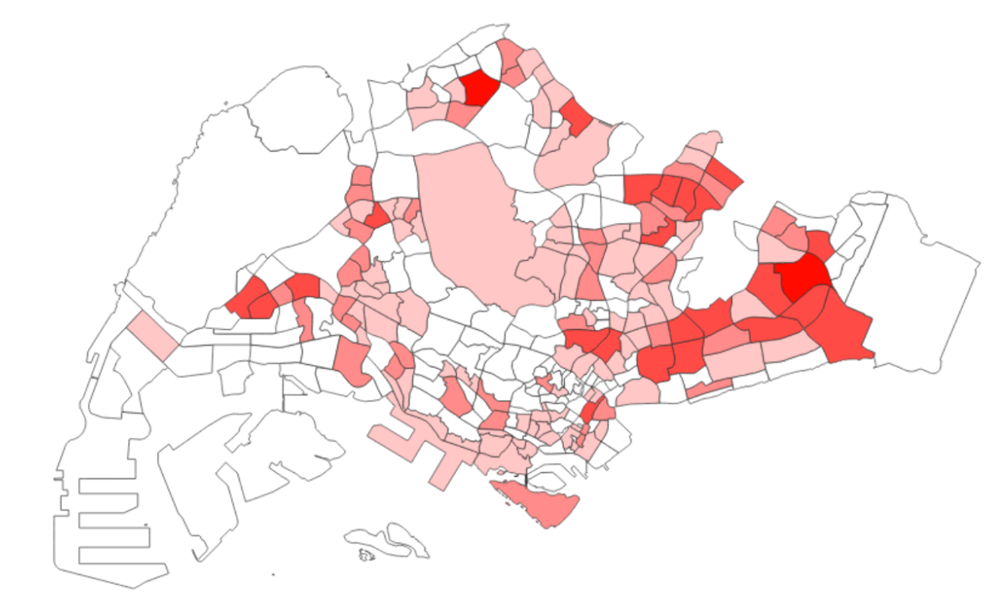

Results and Analysis
1. Spatial distribution of EV Charging Points

Key Insights from the Map:
CBD Areas:
- Urban areas such as Marina Bay, Central Business District (CBD), and areas with high commercial activity (e.g., Orchard Road, Raffles Place) are likely to have a higher number of charging outlets due to higher demand from residents, businesses, and commuters.
Military Zones
- The lack of EV charging zones in the northwestern part of Singapore can be attributed to the land being primarily used for military purposes, such as Tengah Air Base, Sungei Gedong Camp, and Lim Chu Kang, which is a mix of military facilities and cemetery land. This significantly limits the availability of space for EV charging infrastructure in these areas.
BTO Development:
- The high density of EV charging zones in the northern and northeastern regions, such as around Sengkang and Punggol, can be attributed to the rise in the number of BTO (Build-to-Order) developments in these areas. As these new residential developments grow, the demand for EV infrastructure increases, leading to more concentrated distributions of charging points to meet the needs of the expanding population.
Industrial Zone Influence:
- The large expanse of white areas in the west of Singapore is primarily due to the region being an industrial area (Tuas Industrial Area and Jurong Island), where the demand for EV charging stations is generally lower.
1.1 Suitable Areas Lacking EV Charging Points
1.1.1 Springleaf/Lentor Area
Reasoning: They are developing residential areas in Singapore and EV charging infrastructure may not be prioritized yet, as foundational needs like roads, utilities, and public transport take precedence.
Proposed Solution: Build in more public EV charging stations in shared parking spaces when the residential spaces are more or less developed.
1.1.2 Bukit Timah
Reasoning: These areas primarily consist of landed properties and they face limited availability of shared parking space to install public EV chargers. Furthermore, with private parking spaces like driveways and garages, residents are more likely to use home charging solutions, reducing the need for public chargers.
Proposed Solution: Given that Bukit Timah and Clementi are primarily made up of landed properties, residents have the advantage of installing solar panels on their rooftops to power home-based EV chargers. A hybrid solution that combines these private solar-powered chargers with community charging hubs can be considered.
1.1.3 Queenstown
Reasoning: Queenstown is an older, more established area with older infrastructure that may not have been initially designed to accommodate modern EV charging needs.
Proposed Solution: With areas like Queenstown undergoing redevelopment under government plans, there is an opportunity to integrate EV charging infrastructure.
1.1.4 Tuas and Jurong Island
Reasoning: Despite it being an industrial area, it has a potential for more solar-powered EV chargers to be built because of the high amount of sunlight they receive as seen in the Solar Irradiance map.
Proposed Solution: Establish solar-powered EV charging hubs specifically designed for industrial fleets and heavy electric vehicles (EV trucks). Incentives from the EV Heavy Vehicle (EHV) grant can be used to encourage logistics and manufacturing firms in Tuas to adopt electric fleets, creating a sustained demand for charging infrastructure.
2. Solar Irradiance (GHI)
The map illustrates the Global Horizontal Irradiance (GHI) values across Singapore, measured in kilowatt-hours per square meter per year (kWh/m²/year), derived from regional solar GIS datasets. This is a key indicator of solar energy availability — essential for planning solar PV installations to support EV charging infrastructure.
GHI values across Singapore range from ~1,596 to 1,692 kWh/m²/year, with higher irradiance concentrated in southern and eastern regions.
Top-performing planning areas include:
Tuas and Jurong Island (West)
Changi and East Coast (East)
Southern Islands & Sentosa (South)
- These regions consistently show darker orange shades, indicating stronger solar exposure and thus higher energy generation potential per unit area.
- Central and North-Central regions (e.g., Bukit Timah, Bishan) show slightly lower GHI values, likely due to a mix of topography (hills) and higher vegetation cover.
3. Slope Analysis and Classification
The first map presents a reclassified slope analysis of Singapore derived from Shuttle Radar Topography Mission (SRTM) 30m DEM data. Slope is categorized into five classes: Gentle, Moderate, Moderately Steep, Steep, and Very Steep. The spatial distribution shows that:
Majority of Singapore’s terrain falls under Gentle and Moderate categories, especially in central, north-eastern, and eastern regions.
Steep and Very Steep areas are primarily concentrated in the Central Catchment Nature Reserve, Bukit Timah, and southern ridges.
Coastal and reclaimed areas such as Tuas, Changi, and Jurong Island display flat terrain, making them structurally favorable for infrastructure development.
This baseline terrain classification helps identify terrain-constrained zones where solar-powered EV infrastructure may face installation challenges due to steep slopes.

The second map overlays the existing EV charging station distribution onto the slope classification layer. The integrated view reveals key insights:
The majority of EV charging stations are located within Gentle to Moderate slope areas, which is ideal for both construction and maintenance.
There is a noticeable avoidance of steep zones, confirming practical urban planning decisions that align with topographic suitability.
The North-East, Central, and East regions (e.g., Punggol, Ang Mo Kio, Tampines) show both high EV charging density and gentle terrain, suggesting these are strong candidate zones for solar integration on flat rooftops or open lots.
The zoom-in inset shows how even at a micro level, EV stations are clustered in flatter pockets within varied slope zones — reinforcing the role of slope as a critical spatial factor in siting decisions.
Slope suitability analysis is essential when planning for infrastructure that involves hardware installation, such as solar panels and EV chargers. Steeper slopes not only increase installation difficulty and cost but may also pose safety or structural concerns. Hence, this slope-overlay method:
Aids in screening out unsuitable zones early in the planning phase
Reinforces the importance of combining topographic and infrastructural layers in GIS-based decision-making
Supports the prioritization of flat terrain zones for solar-powered EV station deployment under Singapore’s Green Plan goals